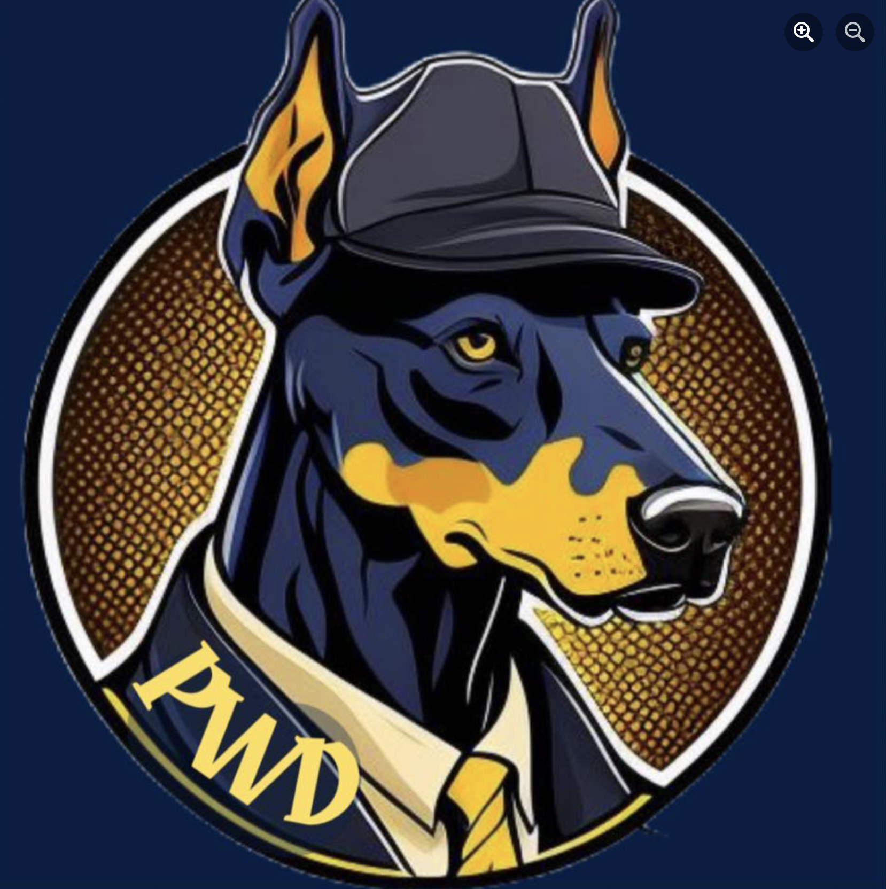

My name is Gauthier Vezio, I was the captain of one of Barcelona's best rugby teams, Barcelona universitari club, and now, I am president of the BDE of Essec.
My name is Gauthier Vezio, After finishing my studies at the IFS I decided to pursue my studies at the ESSEC Singapore business school with the GBBA program. But I am not only defined by my academic career, here is more.
I love travelling, especially with my friends and family. We just recently came back from Vietnam! I deeply enjoyed being able to ride my motorcycle on clear roads. As we returned home from Vietnam, I carried with me a heart full of cherished memories and a renewed sense of wanderlust. It was a trip that enriched my life in countless ways, and I am grateful for the opportunity to have traveled and explored this beautiful country with my dear ones. I can't wait for our next adventure, as traveling continues to be a source of joy and inspiration in my life.
As i said before, I was captain of two teams. One was in Singapour it was called SCC and IFS in Barcelona it was Barcelona universitari club.
As i stated earlier, I am the president of the Singapore BDE which is called the Peaky winders, PWD for short. (BDE stads for Bureau of Students). Our goal is to create events and activities for our students! Here is our logo.
